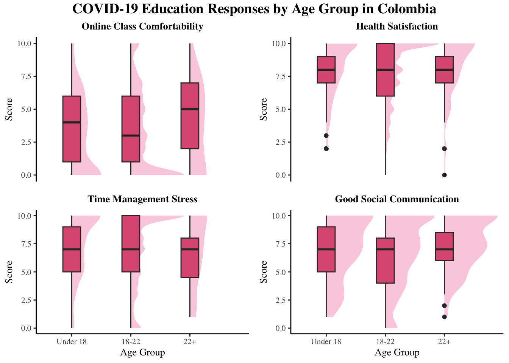
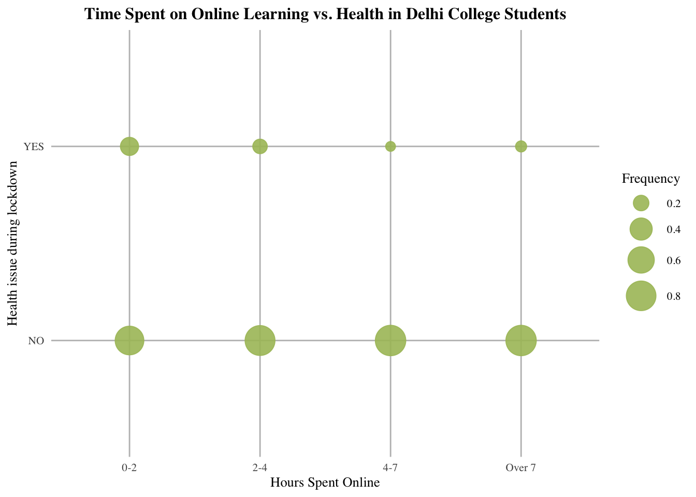
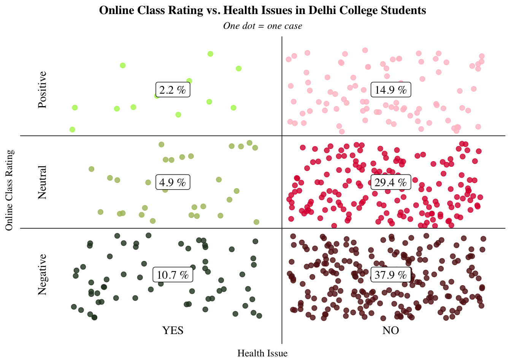

Building Edtech for Mental Wellbeing
By Na & Avianna
Throughout and in the aftermath of the COVID-19 pandemic, there has been a notable shift towards incorporating technology into education. While educational technology has increased accessibility and flexibility in uncertain times, there are potential consequences due to the inherent lack of social connection and physical activities in online learning. In this project, we aim to investigate this increasing prevalence of educational technology and their impact on the well-being of individuals within this evolving educational landscape.
Research Questions
To examine the impact of educational technological tools on students’ well-being, we explore three questions:
- Is there any age group that is more negatively affected by COVID-19?
- How do digital learning tools affect university students mental well being?
- Is there universality in terms of these elements?
Question 1: Which age group is most heavily impacted?
To investigate which age group is most heavily affected by the transition to online learning, we compare the reported comfortability with online class, state of wellness, efficiency with time utilization, and perceived social connection across different age groups.
It is apparent that college-aged students (aged 18 to 22) report the greatest negative impact with their online learning experience. They reported a negative experience during COVID-19 learning at over double the proportion of the other two age groups, and are also much less likely to have a positive experience with online class. These students also reported more health issues, less efficient time utilization, and worse social connection.
When it comes to Colombian students, college-aged students remain more negatively impacted by the transition to online learning compared to students of different age groups. In particular, they have a lower median score regarding their comfortability with online class. While the median score for all age groups across the other 3 categories are comparable, college students are more likely to report a lower score for their health satisfaction and social connection, as well as higher stress with time management.

Question 2: How do digital learning tools affect university students mental well being?
a. Time On Online Learning vs. Well-being (no data from Colombia)
Contrary to our hypothesis, there is a negative relationship between the number of hours Delhi college students spent online and reported health issue. Among college students that did report health problems, most spent under 4 hours for online learning.

C. Comfortability with Online Class vs. Well-being

colombia %>%
ggplot(aes(x = onl_class, y = `13.6 How happy are you with:\r\nYour health overall`)) +
ggdist::stat_halfeye(fill = "#f99fbe", color = NA, alpha = 0.5) +
geom_boxplot(fill = "#de5d83", width = 0.2) +
labs(x = 'Online Class Comfortability', y = 'Health Satisfaction Rating', title = 'Correlation between Online Class Comfortability and Well-being in Colombian Students') +
theme_classic() +
theme_customization_b